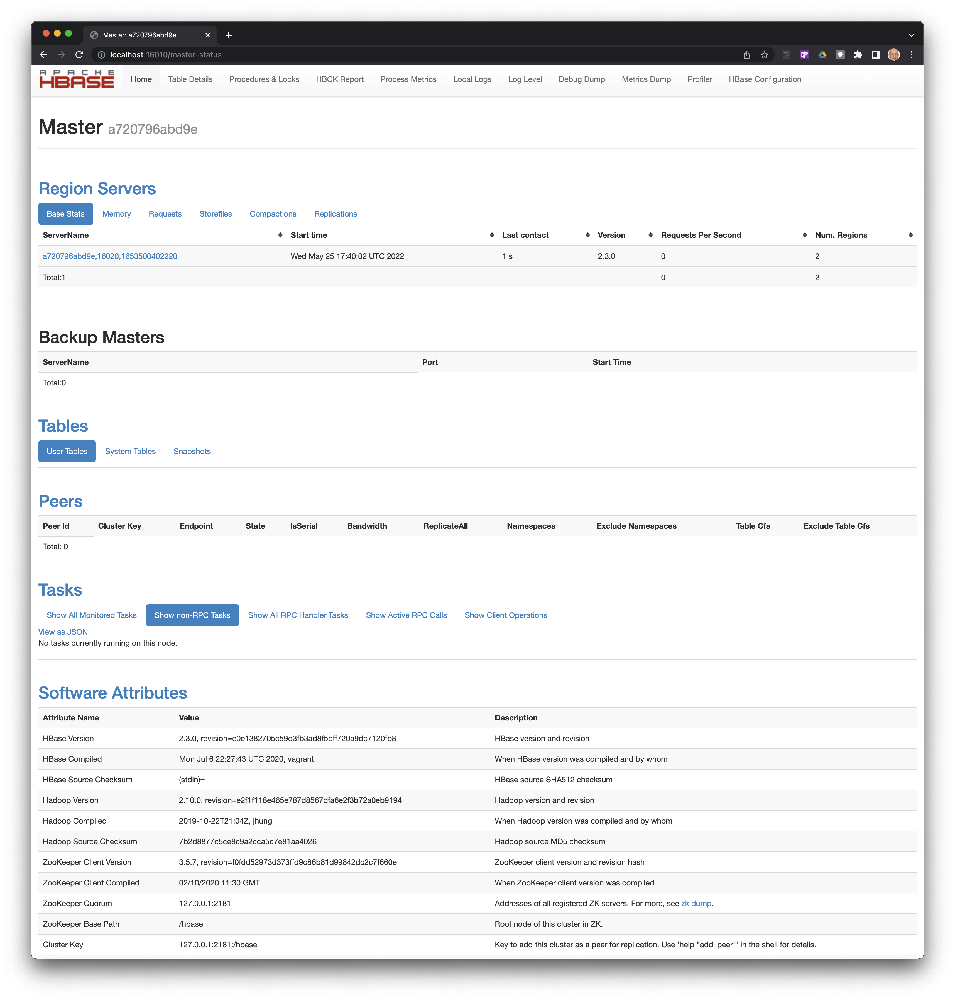

Comandos básicos de Apache HBase
Última modificación: Mayo 25, 2022
Introducción
Es un modelo similar a Google Big Table, diseñado para acceso a grandes volúmenes de datos estructurados.
Puede manejar tablas con billones de filas por millones de columnas
Mientras Big Table se basa en el Google File System, Apache HBase tienes capacidades similares en Hadoop y HDFS.
Es orientado a columnas y escalable horizontalmente.
Su objetivo fundamental es el almacenamiento y recuperación de datos con acceso aleatorio.
Características
Escalable horizontalmente: se pueden adicionar columnas en cualquier momento.
Integración con Map/Reduce.
Usa mapas ordenados, multidimensionales, persistentes y distribuidos
Es debilmente tipado
No usa relaciones entre los datos.
Shell
El shell es accesible con:
$ hbase shell
Estado del cluster

Cell magic %%hbase
[1]:
from IPython.core.magic import Magics, cell_magic, line_magic, magics_class
from pexpect import spawn
TIMEOUT = 60
PROG = "hbase shell"
PROMPT = ["0>", "0>"]
QUIT = "exit"
@magics_class
class Magic(Magics):
def __init__(self, shell):
super().__init__(shell)
self.app = spawn(PROG, timeout=60)
self.app.expect(PROMPT)
@cell_magic
def hbase(self, line, cell):
cell_lines = [cell_line.strip() for cell_line in cell.split("\n")]
cell_lines = [cell_line for cell_line in cell_lines if cell_line != ""]
for cell_line in cell_lines:
self.app.sendline(cell_line)
self.app.expect(PROMPT, timeout=TIMEOUT)
output = self.app.before.decode()
output = output.replace("\r\n", "\n")
output = output.split("\n")
output = [output_line.strip() for output_line in output]
for output_line in output:
if output_line not in cell_lines:
print(output_line)
return None
@line_magic
def quit(self, line):
self.app.sendline(QUIT)
def load_ipython_extension(ip):
ip.register_magics(Magic(ip))
load_ipython_extension(ip=get_ipython())
status
[2]:
%%hbase
status
1 active master, 0 backup masters, 1 servers, 0 dead, 2.0000 average load
Took 0.3893 seconds
hbase(main):002:
version
[3]:
%%hbase
version
2.3.0, re0e1382705c59d3fb3ad8f5bff720a9dc7120fb8, Mon Jul 6 22:27:43 UTC 2020
Took 0.0004 seconds
hbase(main):003:
table_help
[4]:
%%hbase
table_help
Help for table-reference commands.
You can either create a table via 'create' and then manipulate the table via commands like 'put', 'get', etc.
See the standard help information for how to use each of these commands.
However, as of 0.96, you can also get a reference to a table, on which you can invoke commands.
For instance, you can get create a table and keep around a reference to it via:
hbase> t = create 't', 'cf'
Or, if you have already created the table, you can get a reference to it:
hbase> t = get_table 't'
You can do things like call 'put' on the table:
hbase> t.put 'r', 'cf:q', 'v'
which puts a row 'r' with column family 'cf', qualifier 'q' and value 'v' into table t.
To read the data out, you can scan the table:
hbase> t.scan
which will read all the rows in table 't'.
Essentially, any command that takes a table name can also be done via table reference.
Other commands include things like: get, delete, deleteall,
get_all_columns, get_counter, count, incr. These functions, along with
the standard JRuby object methods are also available via tab completion.
For more information on how to use each of these commands, you can also just type:
hbase> t.help 'scan'
which will output more information on how to use that command.
You can also do general admin actions directly on a table; things like enable, disable,
flush and drop just by typing:
hbase> t.enable
hbase> t.flush
hbase> t.disable
hbase> t.drop
Note that after dropping a table, your reference to it becomes useless and further usage
is undefined (and not recommended).
Took 0.0003 seconds
hbase(main):004:
whoami
[5]:
%%hbase
whoami
root (auth:SIMPLE)
groups: root
Took 0.0121 seconds
hbase(main):005:
[6]:
%quit